Node Listen Manual Receive and transmit audio, setting by setting
Node Listen puts one node in your phone's browser: listen with about half a second of delay, talk
with push-to-talk, and connect favorites. This manual follows the audio both ways, from the radio to your ear and
from your mic to the air, and explains every setting along the way: where it acts, what it does, when to change
it, and how to measure the result with the built-in meters, tests and Audio check.
RECEIVETRANSMITSETTINGSLEVELSTROUBLESHOOTING
Covered by this edition
Tool
File
Version
Node Listen
nodelisten_v0_4_17_20261020.py
0.4.17
Dashboard
nodecontrol_pi02w_v9_3_93 / nodecontrol_v9_3_89
9.3.93-pi02w · 9.3.89 (full), for M17 favorites and the page following Node Listen
Node Listen is a common tool: the same file runs on the Pi Zero 2 W and the
full build. The rest of the suite is covered in the user manual, docs/ASL-DVS_User_Manual.pdf.
KD8PGK · written with Claude (Anthropic) · CC BY-NC 4.0 · github.com/kd8pgk/ASL-DVS
Contents
In this manual
Part I · Getting going
1What Node Listen is
2Install and first setup
3The page
Part II · The audio, end to end
4Receive (RX) audio
5Transmit (TX) audio
6Settings reference
7Getting levels right
8Reading the spectrum and the meters
Part III · Everything else
9Connect and favorites
10Troubleshooting by symptom
11From the internet, and security
12Reference: files, ports, settings keys, API, history
How to read it
If you only want to listen, chapters 2 and 3 are enough. If you transmit, read chapters 5 and 7 before your first
contact: most audio complaints come from levels that were never set. Chapter 6 is the reference to come back to.
Each setting is marked with where it is kept:
Mark
Meaning
NODE
Kept on the Pi in /etc/asl_dvs/nodelisten.conf. Changes it for everyone who uses Node Listen on this node. Needs you to be logged in.
BROWSER
Kept in this browser only. Each phone, tablet or computer has its own, and changing it on one leaves the others alone. No login needed.
NOTELevels are given in dBFS: decibels below digital full scale.
0 dBFS is the loudest a sample can be; −6 dBFS is half that; −20 dBFS is a tenth. Speech is measured as an average
(what you hear as loudness) and as a peak (the loudest instant, which is what clips).
PART I
Getting going
What Node Listen does, how to set it up on a node, and a tour of the page.
What Node Listen is
Install and first setup
The page
Chapter 1
What Node Listen is
A web page served by the Pi on port 8993 that lets a phone, tablet or computer listen to one node,
transmit through it, and connect a short list of favorites. There is no app to install.
Receive
The node's audio, about half a second behind, cleaned up on
the Pi (CTCSS and hum cut, levels evened out, squelch tails muted) and played in the browser with a live spectrum.
Transmit
Push-to-talk from the phone's microphone, processed in the page
(filter, leveler, noise gate) and sent to a private node, 1921, that Node Listen keeps linked to your node.
Connect
Up to 10 favorites: AllStar nodes, EchoLink stations and M17
reflectors. Node Listen reports whether each link actually came up.
Measure
Live meters, a mic test, a test through the node, and an Audio
check that watches a few minutes of real use and says what to change.
1.1What it needs
Item
Why
An ASL3 node (Asterisk with app_rpt)
Node Listen takes the node's audio from Asterisk and transmits through it.
Python 3.11 or later
As on Debian 12 and 13. Node Listen uses only the standard library.
A modern browser
Chrome, Firefox, Safari or Edge from the last few years. The microphone needs the https:// page.
Optional: the Dashboard (Node Controller)
Needed for M17 favorites; when it runs, connects from its node go through it so it shows them.
1.2How it fits on the node
Node Listen adds two things to /etc/asterisk/rpt.conf, each with a backup first: one
outstreamcmd line in your node's stanza, which sends the node's audio to Node Listen, and a private
node 1921, which carries your transmissions in. Everything else stays as it was: the radio, the other links
and DVSwitch hear and send exactly what they did before.
Chapter 2
Install and first setup
Ten minutes from nothing to a first test transmission.
2.1Install
The installer (7.2.0 and later) asks whether to add Node Listen; instmon (2.58.0 and later) lists it with the
other tools and updates it. By hand: sudo python3 nodelisten_v….py --install.
Open http://<pi-address>:8993. Node Listen moves you to https://. The certificate
is made on the Pi, so the browser warns once: accept it.
Log in with the Pi's root password.
2.2Receive: send the node's audio here
Setup tab, open the Receive card. The table lists each node in rpt.conf and its
outstreamcmd, if any.
Pick your node and press Send its audio here. That node becomes Node Listen's main node.
Press Restart Asterisk (it asks first; every link drops and reconnects).
Listen tab: within a few seconds the status line shows a green feed light, and audio plays when the
node passes any.
CAREFULA node takes one outstreamcmd. If yours already has
one (a Broadcastify feed, for example), Node Listen refuses rather than replace it.
2.3Transmit: add node 1921
Setup tab, open the Transmit card and press Add node 1921. Node Listen adds a [1921]
stanza (your node's template, a USRP channel, no hang time, telemetry or courtesy tone) and a [nodes]
line, after a backup.
Press Restart Asterisk. Within 20 seconds the card's summary reads Set up and linked: Node Listen
links 1921 to your node and relinks it whenever it drops.
2.4First test transmission
Setup tab, Microphone card: press Test mic, talk for 4 seconds, and read the report (section 8.2).
Adjust Mic gain until it says Good.
Press Test through the node. It transmits for 4 seconds, over the air and to every link, and plays back what
the node sent out.
Listen tab: hold the push-to-talk button and make a short call.
Chapter 3
The page
Three tabs along the bottom: Connect, Listen and Setup. The title bar and the tabs bar stay put;
only the middle scrolls, and the Listen tab is sized to fit the screen without scrolling.
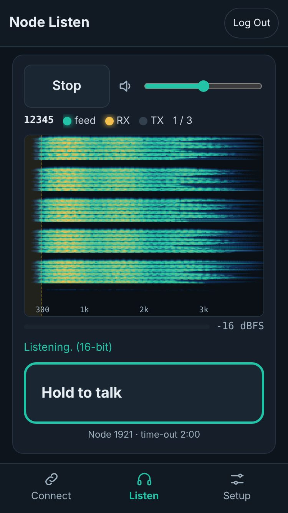
Figure 3.1 · Screenshot (test signal). The Listen tab.
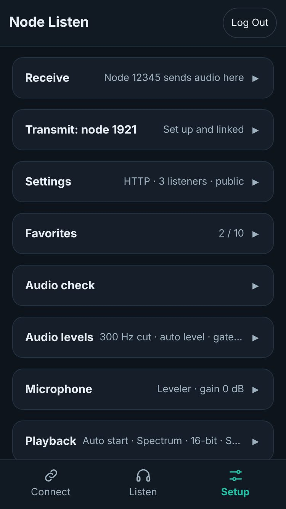
Figure 3.2 · Screenshot. The Setup tab: each card closed, with its summary.
3.1Title bar and login
Part
What it does
Version
Hidden on narrow phones.
Node Controller
Opens the Dashboard, or switches to its tab if it is already open. Shown only while the Dashboard runs.
Log In / Log Out
The root password. Five wrong tries from one address lock that address out for 5 seconds, doubling up to 5 minutes. A login lasts 12 hours from the last use.
With Listen without logging in on (Settings card), anyone who can reach the page gets the Listen tab
without the password but can't transmit or change anything.
3.2Listen tab, top to bottom
Part
What it does
Listen / Stop and volume
Starts and stops the audio; the slider beside it is the volume, 0 to 200 %. Listening starts by itself when the page opens (section 6.7).
Status line
Node number · feed light (green while audio arrives from Asterisk; "no feed 12 s" otherwise) · RX light (the node is passing audio) · TX light (someone transmits from Node Listen) · listeners now / limit · CHECK 2:13 while an Audio check runs. Hover over a light for details.
Spectrum
0 to 4 kHz, waterfall or bars; tap to switch (chapter 8).
Level bar
The node's level, or your mic level (red TX) while you hold push-to-talk.
Message line
Listening., Tap anywhere to start listening, or why the stream stopped.
Push-to-talk
Hold to talk (chapter 5). Red TALKING with the time; amber Busy: who 0:12 when someone else transmits.
3.3Setup tab
Cards from one-time setup at the top to everyday use at the bottom: Receive, Transmit,
Settings, Favorites, Audio check, Audio levels, Microphone, Playback,
Log. Tap a title to open or close it; every card starts closed, showing a one-line summary such as
Node 41234 sends audio here or 300 Hz cut · auto level · gate light. Chapter 6 goes through them all.
3.4Connect tab
The node's links at the top, with the linked favorites and Disconnect; below, the favorite to connect
(chapter 9).
PART II
The audio, end to end
Where the sound goes, what changes it at each step, which setting acts where, and how to set and check levels.
Receive (RX) audio
Transmit (TX) audio
Settings reference
Getting levels right
Reading the spectrum and the meters
Chapter 4 · RX
Receive (RX) audio
From the radio to your ear: everything the node hears, cleaned up once on the Pi for every listener,
then buffered, played and drawn by each phone.
Figure 4.1 · The receive path. Amber steps run on the Pi once for everyone, blue steps on each
listener's own device. The dashed branch is measuring only: the spectrum, the level bar and the Audio check see the
audio before your volume.
4.1From the node to Node Listen
app_rpt mixes everything your node hears (the radio, every link, telemetry) and writes it, 8,000 samples a second
at 16 bits, to the outstreamcmd program, a small part of Node Listen that passes it on to
127.0.0.1:6200. The audio pump cuts it into 20 ms frames (160 samples) and sends one to every
listener every 20 ms. If audio arrives in bursts, up to 0.5 s waits in a queue; beyond that the oldest is dropped
and counted.
The status line's feed light is green while frames arrive. The RX light and the busy lockout use the
node's own level before any cleanup: a frame louder than −50 dBFS counts as audio, held for 0.6 s.
4.2RX cleanup on the Pi
Three steps, done once for every listener, change only what Node Listen's listeners hear. They are on by
default; chapter 6 has each setting in detail. Nothing is done while nobody listens, and near-silent frames
(under −65 dBFS) skip the work.
Step
What it does to the sound
Cut below 300 Hz
Removes hum and the lower CTCSS (PL) tones: 100 Hz drops by about 38 dB, 150 Hz by 24 dB, 250 Hz by 7 dB. Voice above 300 Hz is untouched.
Automatic level
Aims speech at about −20 dBFS: brings quiet stations up by as much as 18 dB and loud ones down by as much as 6 dB. It turns down within a frame or two, comes up at 3 dB a second (faster for the first half second of a new transmission), and holds still between transmissions. RX gain (Audio levels) is added on top.
Soft limiter
Up to about −1 dBFS nothing changes; above that, peaks are rounded off smoothly instead of clipped.
Squelch-tail gate
Mutes the burst of hiss after a station unkeys, and long silences. It tells hiss from voice by how alike neighbouring samples are: voice scores high, hiss low. To mute a tail from its first frame, it holds the audio back 80 ms.
4.3To your phone and out of the speaker
Format: 16-bit (128 kbit/s) by default, or μ-law (64 kbit/s) with 16-bit audio off. μ-law is the
phone-line format: half the data, a little more hiss on quiet audio.
Listen buffer: the page plays each 100 ms of audio a fixed time after it arrives, 0.25 s by default, so
a late packet doesn't make a gap. When audio arrives later than the buffer can cover, playback restarts
(a dropout), and the Audio check counts it.
Smooth playback: the page upsamples 8 kHz to the phone's own rate (44.1 or 48 kHz) with a proper filter,
which removes the faint sizzle some phones add.
Volume and then the speaker. The spectrum and meters see the audio before the volume.
4.4Where the half second goes
Stage
Delay
Asterisk to Node Listen
a few tens of ms
Squelch-tail gate look-ahead
80 ms (only with the gate on)
Page chunks
up to 100 ms
Listen buffer
250 ms by default (150 ms to 1 s)
Network
a few ms on Wi-Fi at home; more on mobile data
The total is about half a second at home. This is why the node's own audio comes back late when you test
through it, and why Node Listen ignores the busy lockout for 1 s after your own transmission.
Chapter 5 · TX
Transmit (TX) audio
From your mic to the air: shaped in the page, sent in 20 ms pieces, smoothed on the Pi and fed to
node 1921, which is linked to your node.
Figure 5.1 · The transmit path. Blue steps run in your browser with your device's settings,
amber steps on the Pi with the node's settings. The meters measure right after the leveler, so they show what
the Pi will get.
5.1In the browser
Browser processing. The phone's own Automatic gain, Noise suppression and
Echo cancellation, each switchable. They run before Node Listen sees the sound.
Mic gain, −12 to +24 dB: a plain volume control on the mic.
Resample to 8 kHz with a filter that cuts at 3.4 kHz, so sounds above it don't fold back as hiss or whine.
Voice filter (cuts rumble below about 250 Hz) or Radio voice (cuts below 300 Hz and lifts 2.5 kHz
by 4 dB, a crisper, more "radio" sound). With Radio voice on, the voice filter is skipped.
Noise gate (Off, Light, Strong): turns the mic down between words.
Leveler: a gentle compressor that keeps your level even, followed by a limiter that never lets a peak
past −1 dBFS.
Every 20 ms (160 samples) a frame goes to the Pi over the WebSocket /api/talk.
5.2On the Pi and on the air
TX buffer. The Pi waits until it has this much of your audio (120 ms by default) before it starts
sending, so short hiccups on the phone's connection don't make gaps. If it runs dry anyway, it sends silence,
refills, and counts a gap.
TX gain (−12 to +12 dB, with a soft limit at about −1 dBFS), only with Adjust audio levels here on.
The frames go as USRP packets to node 1921 (127.0.0.1:32018), keyed. On release the last frame is
faded out and three unkey packets follow.
Node 1921 is linked to your node, so your audio goes out on the radio and to every link, like a local user's.
5.3The safety rules
Rule
What happens
Busy lockout
With Don't transmit while the node is busy on, a press is refused while the node passes audio (the RX light), except within 1 s of your own unkey.
One at a time
A second person's press is refused while someone transmits from Node Listen.
Time-out
The transmission stops at TX time-out (120 s by default). Let go and press again.
Audio stopped
If no audio reaches the Pi for 1 s (a dropped connection), it unkeys.
Page hidden
Switching apps, locking the phone or leaving the page releases push-to-talk.
Chapter 6
Settings reference
Every setting, card by card, in the order of the Setup tab. NODE settings
need you to be logged in and apply to everyone; BROWSER settings are this device's own.
6.1Receive card
Control
What it does
Node table
Each node in rpt.conf and its outstreamcmd: Sends audio here, to another UDP port (press Send again), another program's line, one inherited from a template, or Not sending.
Send its audio here
Adds Node Listen's line to the picked node (taking it off any other node), backs up rpt.conf, and makes that node the main node. Takes effect after Restart Asterisk.
Remove
Takes the line out again (with a backup).
Restart Asterisk · Refresh
Restart asks first; every link drops and reconnects. Refresh rereads rpt.conf.
Line added · Feeder · UDP input
The exact line; whether Asterisk is running the feeder program now; whether Node Listen is listening on the UDP port.
6.2Transmit card
Control
What it does
State
Not set up, Set up and linked, Set up; linking, Asterisk does not know it yet: restart Asterisk, or what is wrong.
Add node 1921
Adds the [1921] stanza and its [nodes] line (with your IAX port if it isn't 4569); also repairs a wrong [nodes] line. Refuses if rpt.conf has a [1921] it didn't add.
Remove
Takes both out (asks first). Push-to-talk stops working.
6.3Settings card NODE
Setting
Default
Range
What it does, and when to change it
Web port
8993
1024–65535
The page's port. Change only if something else uses 8993. Restarts Node Listen.
UDP port
6200
1024–65535
Where the node's audio arrives. Changing it rewrites the outstreamcmd line too; restart Asterisk.
Max listeners
3
1–10
How many people can listen at once. Each takes 64 or 128 kbit/s of upload on your internet line when they're away from home.
TX time-out (s)
120
30–600
The longest one transmission can last.
HTTPS
on
on / off
Needed for the microphone. Off only for a listen-only node. Restarts Node Listen.
Don't transmit while the node is busy
on
on / off
The busy lockout (section 5.3). Turn it off only if a constant noise on the node keeps it busy.
Listen without logging in
off
on / off
Anyone who can reach the page may listen (not transmit).
6.4Audio check card BROWSER
Length (2, 5, 10 or 15 minutes; 5 by default), Start check, Stop, then the report with
Apply/Undo, Compare with last check and Copy report. Section 7.4 explains it.
6.5Audio levels card NODE
Adjust audio levels here
Off by default. Off, the four settings below are not used: no TX or RX gain, a 0.25 s listen buffer and a 120 ms TX
buffer. On, they take effect. The RX cleanup further down works either way.
Setting
Default
Range
What it does, and when to change it
Mic to node (TX)
0 dB
−12 to +12 dB
Gain on every transmission from Node Listen, on the Pi, for everyone. Use it when all phones come out too quiet or too loud on the air (the node test shows it). For one phone, use its Mic gain instead.
Node to phone (RX)
0 dB
−12 to +12 dB
Gain on what every listener hears, after Automatic level. Use it when audio is quiet even with Automatic level on, or when you turn Automatic level off.
Listen buffer
0.25 s
0.15, 0.25, 0.5, 1 s
How far behind real time the page plays. Larger rides over a weak connection without dropouts; smaller is closer to live. 0.15 s on good Wi-Fi, 0.5–1 s on mobile data.
TX buffer
120 ms
60, 120, 200, 300 ms
How much of your audio the Pi collects before sending. Raise it if transmissions have gaps (TX gaps, the Audio check); lower it for a slightly quicker start.
Below them: TX peak (the loudest point of the current or last transmission, after TX gain), RX level
(the node's level, before cleanup) and TX gaps. Aim for TX peaks of −6 to −3 dBFS on normal speech.
RX cleanup
Setting
Default
What it does, and when to change it
Cut below 300 Hz
on
Removes hum and CTCSS tones from what listeners hear (section 4.2). Off only to hear the tones themselves, for example to check which one a station sends. It costs the most of the three on the Pi.
Automatic level
on
Evens out quiet and loud stations. Off to hear stations at their real levels, or for an exact node test.
Squelch-tail gate
Light
Light mutes the hiss after a station unkeys and long silences. Strong also mutes shorter and quieter hiss: use it on a node with noisy links, and turn it back if the start of speech is ever clipped. Off passes everything, with no 80 ms delay.
Processing load: how much of one CPU core the cleanup took over the last 5 seconds. On a Pi Zero 2 W it
should stay at about 10 % or less while audio passes. Save keeps everything on the card; Reset to
0 dB puts the gains and buffers back (Save to keep it).
6.6Microphone card BROWSER
Setting
Default
What it does, and when to change it
Leveler
on
A compressor and limiter in the page: quiet speech comes up (by up to 9 dB), loud speech is held back, and nothing passes −1 dBFS. Leave on; turn off only if you level the audio somewhere else.
Automatic gain
off
The browser's own leveling. It fights the leveler and undoes Mic gain, so leave it off when the leveler is on.
Noise suppression
on
The browser removes steady background noise (fans, traffic). Turn off if your voice sounds watery.
Echo cancellation
off
Rarely needed: listen audio is muted while you talk. Turn on only with a speaker right next to the mic.
Cuts below 300 Hz and lifts 2.5 kHz for a crisper sound that cuts through on FM. Leave off if your audio already sounds bright, or if the radio adds pre-emphasis.
Noise gate
Off
Light opens above −45 dBFS and turns the mic down 15 dB between words; Strong opens above −35 dBFS and turns it down 30 dB. Use Light in a noisy room. If the starts of words are clipped, go back a step (the Audio check measures it).
Mic gain
0 dB
−12 to +24 dB. The main control for your level: set it with the mic test (section 7.2).
Test mic and Test through the node are on this card; chapter 8 shows their meters and reports.
6.7Playback card BROWSER
Setting
Default
What it does, and when to change it
Show the spectrum
on
The waterfall on the Listen tab. Off saves battery on an old phone.
Start listening when the page opens
on
Plays as soon as the page loads or you log in. Most browsers need one tap first; the page asks for it.
Keep the screen on
off
Shown where the browser supports it: keeps the screen awake while you listen or talk.
16-bit audio
on
Cleaner on quiet audio, 128 kbit/s instead of 64. Turn off on a slow or metered connection.
Smooth playback
on
Filtered upsampling, no sizzle. Turn off only on a very slow device.
6.8Log card
What Node Listen has done: listeners, logins, transmissions (with length, gaps and why they ended), connects and
every rpt.conf edit. Fetched only while the card is open.
Chapter 7
Getting levels right
A short procedure for each direction, in the order that avoids fighting yourself. Do it once when
you set the node up and again when you change phones, mics or radios.
7.1Who hears which gain
Gain
Where
Who it changes
Radio RX / TX levels, DVSwitch gains
SysMon, Tune tab; DVSwitch
Everyone: the air, every link, Node Listen.
Automatic level, RX gain, Cut below 300 Hz, gate
Node Listen, Audio levels NODE
Node Listen's listeners only.
TX gain
Node Listen, Audio levels NODE
Transmissions from every Node Listen user.
Mic gain, leveler, filters, gate
Node Listen, Microphone BROWSER
Transmissions from this device only.
Volume
Listen tab BROWSER
What you hear on this device only.
TIPFix things where they start. If the node's own audio is wrong on the air
and on links, fix it in SysMon (radio) first; Node Listen's settings only paper over it for Node Listen's users.
7.2Transmit, step by step
Start clean. Microphone card: Leveler on, Automatic gain off, Noise suppression on, Voice filter on, Noise gate Off, Mic gain 0 dB.
Test mic. Hold the phone where you will hold it on the air and talk normally for 4 seconds. Targets: speech −24 to −12 dBFS, peaks −8 to −1 dBFS, limiter working under 20 % of the time. Change Mic gain by the amount the report suggests and test again until it says Good.
Noise. If the report says Noisy, move to a quieter spot or closer to the mic first; then try Noise gate Light.
Test through the node. For an exact comparison, turn Automatic level off for a minute (Audio levels). Came back should be within about 6 dB of Sent. If every phone comes back quieter or louder by the same amount, use TX gain; if the radio side is off, use SysMon's Tune tab. Turn Automatic level back on.
On the air. Run an Audio check during a real contact or net (section 7.4) and apply what it suggests.
7.3Receive, step by step
The node first. With the radio's own levels right (SysMon, Tune), the RX level on the Audio levels card should peak around −10 to −3 dBFS on a strong local station.
Look at the spectrum. A steady line or band below 300 Hz is a CTCSS tone or hum; with Cut below 300 Hz on it should be faint or gone. Thin bright lines right after transmissions are squelch tails: the gate should remove them.
Leave Automatic level on. If speech is still quiet (the Audio check says so), raise RX gain by the amount it suggests.
Dropouts. If audio breaks up on your connection, raise the Listen buffer a step.
7.4The Audio check
The quick tests show four seconds; the Audio check shows a few minutes of real use, with several stations and
several of your own transmissions.
Setup tab, Audio check card: choose a length and press Start check.
Go to the Listen tab and use the node as usual: listen, talk, listen. The status line shows CHECK 2:13; tap it to come back.
When it ends (or you press Stop), open the card. Each row is green, amber or red against its target, and
What to change lists suggestions with amounts.
Press Apply on a suggestion to make the change (Undo puts it back), run another check, and press
Compare with last check to see the difference.
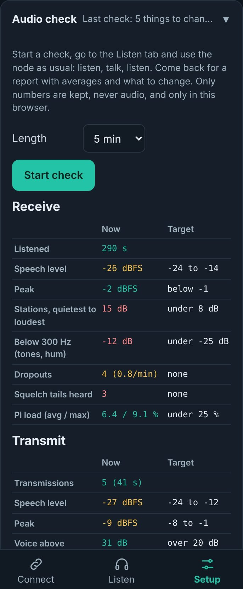
Figure 7.1 · Screenshot (example data). An Audio check report: stations 15 dB apart, hum below
300 Hz, dropouts and squelch tails, each with a suggestion below.
Row
Target
Typical fix
RX speech level
−24 to −14 dBFS
Automatic level; RX gain
RX peak
below −1 dBFS
Lower RX gain, or Automatic level
Stations, quietest to loudest
under 8 dB
Automatic level
Below 300 Hz
under −25 dB
Cut below 300 Hz
Dropouts
none
Larger Listen buffer; better connection
Squelch tails heard
none
Gate Light, then Strong
Pi load
under 25 %
Cut below 300 Hz off
TX speech level · peak
−24 to −12 · −8 to −1 dBFS
Mic gain
Voice above background
over 20 dB
Noise suppression; Noise gate Light
Limiter working
under 20 %
Lower Mic gain
Gate closed while talking
under 10 %
Noise gate a step lower
Transmissions with gaps
none
Larger TX buffer; Wi-Fi
Peak at the Pi
below −1 dBFS
Lower TX gain
NOTEThe check keeps only numbers, never audio, and only in this browser.
It carries on if you switch tabs or reload; time with the page closed or the phone asleep is shown as paused.
7.5Common mistakes
Two automatic gains. The browser's Automatic gain and the leveler fight; leave the browser's off.
Mic gain into the limiter. More mic gain past the point where the limiter works most of the time adds
distortion, not loudness. If the report says the limiter works more than 30 % of the time, turn it down.
Fixing the radio in Node Listen. RX gain and Automatic level only change Node Listen's listeners; a bad
radio level still goes to every link.
Radio voice on a bright radio. If the radio adds pre-emphasis, Radio voice makes it shrill.
Judging levels through the speaker. Phone volume and speakers vary; trust the meters.
Chapter 8
Reading the spectrum and the meters
The waterfall shows what the node passes, the meters show levels, and the test reports say what to
change.
8.1The waterfall
Frequency runs across, 0 to 4 kHz (marks at 300 Hz, 1, 2 and 3 kHz); time runs down, newest at the top, about 25
lines a second. Colour is loudness: dark is quiet, teal is moderate, amber and red are loud. The strip below 300 Hz
is shaded. Tap it to switch to bars, which show the same moment as a bar chart. The examples below were made with a
synthetic voice on a test node, with each problem added in turn.
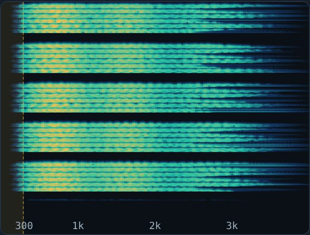
Good speech. Bands of harmonics between 300 Hz and 3.5 kHz, nothing below 300 Hz, clean gaps.
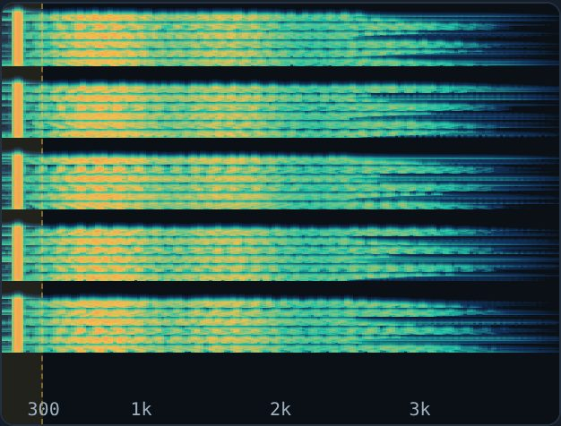
CTCSS tone (100 Hz), cleanup off: a steady bright line in the shaded strip while the station talks.
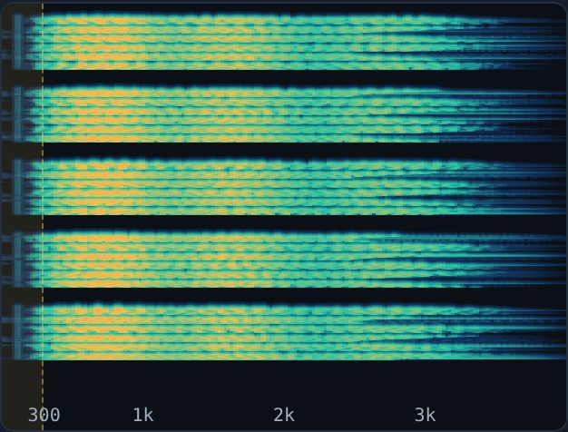
The same with Cut below 300 Hz: the line is gone.
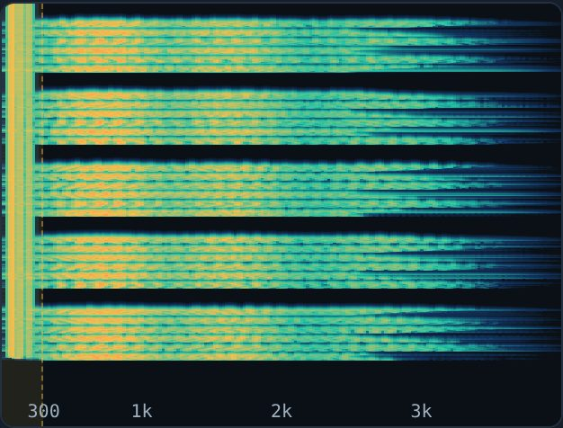
Hum (60, 120, 180 Hz): a band in the shaded strip that carries on between transmissions.
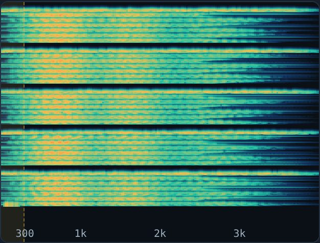
Squelch tails, gate off: a thin bright line across the whole width right after each transmission.
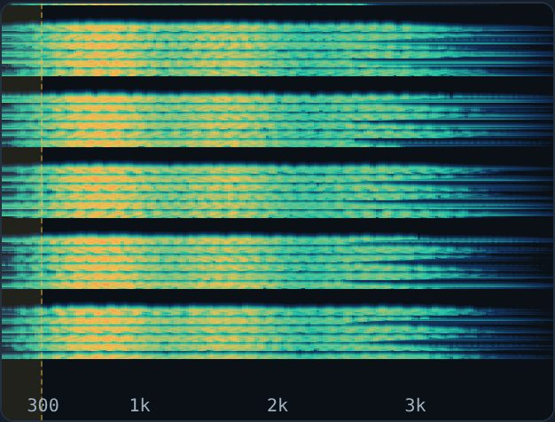
The same with the gate on Light: the tails are gone, the speech is kept.
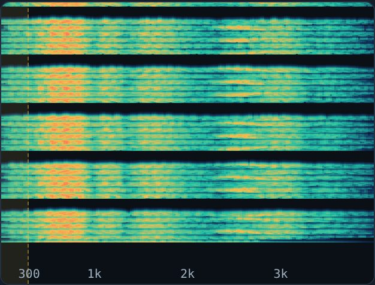
Clipping (overdriven audio): energy smeared across the band and extra lines that aren't in the voice.
8.2The live meter and the mic test report
Figure 8.1 · Screenshot. The live meter during a test.
The bar runs from −60 to 0 dBFS. The teal fill is the average, the amber mark the peak, and the thin white mark
the highest peak of the last second. The green zone (−6 to −3 dBFS) is where peaks belong; above −1 dBFS is red.
The thin bar underneath shows how far the leveler's limiter is turning you down; the text says limiting 4.2 dB
or gate closed.
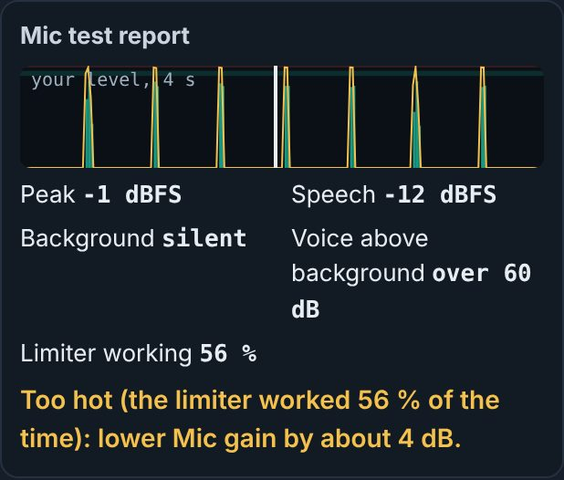
Figure 8.2 · Screenshot (fake test mic). The mic test report: the level over 4 seconds (with a playhead during playback), the numbers, and what to change.
Number
Meaning
Peak
The loudest instant. Should be −8 to −1 dBFS.
Speech
The average while you talk. Should be −24 to −12 dBFS.
Background
The quietest tenth of the recording: the room. silent means digital silence.
Voice above background
Speech minus background. Over 20 dB is clean; under 15 dB sounds noisy.
Limiter working
How much of your speech the limiter was turning down. Over 30 %: too much mic gain.
Gate closed while talking
Shown with the noise gate on. Over 10 %: the gate is eating words.
8.3The node test report
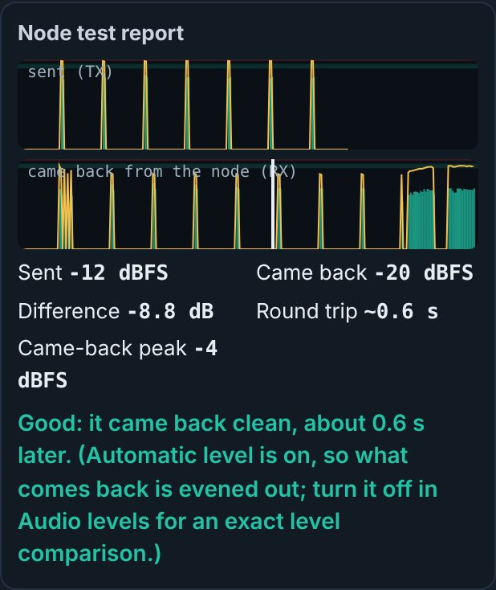
Figure 8.3 · Screenshot (test node). What was sent and what came back, lined up in time.
The test transmits for 4 seconds through the node and records what the node sends back out. The two strips are
lined up so the same words sit above each other; Round trip is how long that took (about half a second
at home). Difference compares the speech levels: within about 6 dB is fine.
With Automatic level on, what comes back has been evened out, so the report says so and doesn't judge the
difference; turn Automatic level off for a minute to compare exactly.
A came-back peak near 0 dBFS means something on the node's side is clipping: TX gain, or the radio and
DVSwitch levels in SysMon.
8.4The level bar while you talk
While you hold push-to-talk, the level bar under the spectrum shows your mic level in red, labelled TX; when
you let go it goes back to the node's level. Peaks should reach the green zone of the live meter, about −6 to
−3 dBFS, on normal speech.
PART III
Everything else
Links and favorites, fixing problems, reaching Node Listen from outside, and the reference tables.
Connect and favorites
Troubleshooting by symptom
From the internet, and security
Reference
Chapter 9
Connect and favorites
9.1Favorites
Setup tab, Favorites card: up to 10. Add row, pick the network (ASL, EchoLink or M17), type the
number and a name, and Save favorites. From the Dashboard… copies one of the Dashboard's favorites.
Network
Type
ASL
The node number, up to 7 digits.
EchoLink
The station's own number, up to 6 digits.
M17 TESTING
The reflector and module: M17-USA C, or M17-USA @ALL (just M17-USA means every module).
9.2Connecting
Connect tab: pick a favorite and press Connect. Links are always made from Node Listen's main node. For ASL
and EchoLink, Node Listen watches the node's links for up to 15 seconds and says how it went:
Result
Meaning
Node 41234 is connected to ASL 2000.
The link is up.
ASL 2000 has not answered after 15 s; node 41234 is still trying.
The far node may be offline or busy.
Node 41234 did not connect to ASL 2000: no link after 15 s.
Check the number; the far node may be refusing connections.
When the main node is also the Dashboard's node and the Dashboard runs, Node Listen asks the Dashboard to connect,
so the Dashboard switches to that mode and shows it. M17 favorites always go this way: the Dashboard tunes the M17
bridge and links node 1917 (Dashboard 9.3.92-pi02w or 9.3.88 full and later).
9.3Links and Disconnect
The Links card at the top of the Connect tab lists the node's links, one per line, with the favorite's name. Node
1921 is marked (TX). Disconnect drops linked favorites only; other links stay.
Chapter 10
Troubleshooting by symptom
Each from the quickest check to the bigger fix. The Log card and SysMon's Node Listen card (its
ASL-DVS tab) show what Node Listen and the node are doing.
No audio at all
Status line: no feed yet means Asterisk isn't sending. Receive card: is the line on your node? Send its audio here, then Restart Asterisk.
Feed green but silent: is the RX light on? Is Listen showing Listening.? Check the volume and the phone's own volume.
Tap anywhere to start listening: the browser is holding sound until you tap.
All 3 listener slots are in use: raise Max listeners or wait.
Audio breaks up or stutters
Raise the Listen buffer a step (0.5 s on mobile data).
Turn 16-bit audio off to halve the data.
Move closer to the Wi-Fi access point. The Audio check counts dropouts.
Some stations are much quieter than others
Turn Automatic level on (Audio levels). If one station is quiet everywhere, it is that station.
Low hum or a tone under every transmission
Turn on Cut below 300 Hz. If the waterfall shows hum between transmissions too, it is on the node: check the radio
interface's grounding.
A burst of hiss after every transmission
Set the Squelch-tail gate to Light, then Strong. The real fix is the radio's squelch or COS on the node sending it.
My transmissions are too quiet, too loud or distorted
Run the mic test and follow it (section 7.2). Distorted with a lot of limiting: lower Mic gain. Fine in the test but
bad on the air: the node test, then TX gain or SysMon's radio levels.
Gaps or choppy audio in my transmissions
Raise the TX buffer to 200 ms; use Wi-Fi rather than mobile data. The Log shows gaps per transmission.
Push-to-talk is refused
Message
Fix
The node is busy
Wait for quiet, or turn off the busy lockout if a constant noise keeps the node busy.
Someone else is transmitting
Wait; the button shows Busy with who and how long.
Node 1921 is not set up / not linked yet
Transmit card: Add node 1921, Restart Asterisk, wait 20 s.
Push-to-talk needs the https:// page
Turn HTTPS on and open the https:// address.
Microphone: Permission denied
Allow the microphone for the page in the browser's site settings.
Transmission stops by itself
Time-out: raise TX time-out. Audio stopped reaching the node: the phone's connection dropped; use
Wi-Fi or raise the TX buffer.
Phone-specific
iPhone: sound needs one tap after the page opens; the lock screen keeps playing while the page is the
active audio. Push-to-talk stops when the screen locks.
Android: battery savers may stop audio in the background; allow the browser to run in the background.
Bluetooth headsets switch to a low-quality call mode when the microphone opens; expect duller listen
audio while you test or talk.
Chapter 11 TESTING
From the internet, and security
Node Listen is meant for your home network. Internet access is off unless you turn it on.
allow_wan in /etc/asl_dvs/nodelisten.conf (no checkbox; then
sudo systemctl restart nodelisten). Off, clients from the internet get not open to the internet
for every page. Home addresses, link-local and Tailscale (100.64.0.0/10) always count as home.
A Cloudflare Tunnel or Tailscale Funnel counts as the internet, whatever address it arrives from.
From the internet the password is only accepted on the https:// page.
On top of the per-address lockout, 20 failed internet logins in 10 minutes make every internet login wait until
that window ends. Home logins are never held.
CAREFULThe login is the Pi's root password. Before opening Node Listen
to the internet, make sure it is long and used nowhere else, and keep the Dashboard and SysMon on the home network.
Chapter 12
Reference
12.1Files
Path
What
/usr/local/lib/asl_dvs/nodelisten/
The program (linked from /usr/local/bin/nodelisten.py)
/etc/asl_dvs/nodelisten.conf
Node settings (12.4)
/etc/asl_dvs/nodelisten_favorites.json
Favorites
/etc/asl_dvs/nodelisten_tls/
The HTTPS certificate and key, made on first start
/etc/asl_dvs/nodelisten_backups/
rpt.conf before each edit, newest 10
/etc/asl_dvs/local_api.key
Key for calling the Dashboard
12.2Ports and service
Port
What
8993/tcp
The page (HTTPS; a plain-HTTP request is redirected)
6200/udp
Node audio in, 127.0.0.1 only
32018 / 34018 udp
USRP to and from node 1921, 127.0.0.1 only
Service nodelisten, through the shared launcher, with Restart=always and
WatchdogSec=60: it stops pinging the watchdog when the page or the audio pump stops answering, and
systemd restarts it. --uninstall removes the outstreamcmd line and node 1921 and keeps the
settings; an install within 30 minutes (an update) puts them back.
12.3Lines Node Listen writes in rpt.conf
; nodelisten: sends this node's audio to the Node Listen page (remove it from that page)
outstreamcmd = /usr/bin/python3,/usr/local/bin/nodelisten.py,--feed,6200
; nodelisten: transmit node for the Node Listen page (remove it from that page)
[1921](<your node's template>)
rxchannel = USRP/127.0.0.1:34018:32018
duplex = 0
hangtime = 0
althangtime = 0
holdofftelem = 1
telemdefault = 0
nounkeyct = 1
[nodes]
1921 = radio@127.0.0.1/1921,NONE
12.4Settings keys (nodelisten.conf)
Key
Default
Range
Page
port
8993
1024–65535
Settings: Web port
udp_port
6200
1024–65535
Settings: UDP port
node
(empty)
node number
Receive: Send its audio here
max_listeners
3
1–10
Settings
public_listen
false
bool
Settings: Listen without logging in
https
true
bool
Settings: HTTPS
tot_sec
120
30–600
Settings: TX time-out
busy_lockout
true
bool
Settings
tune_enabled
false
bool
Audio levels: Adjust audio levels here
tx_gain_db / rx_gain_db
0
−12–12
Audio levels
jitter_ms
250
100–1500
Audio levels: Listen buffer
tx_buffer_ms
120
40–400
Audio levels: TX buffer
rx_hpf / rx_agc
true
bool
Audio levels: RX cleanup
rx_gate
1
0 off, 1 light, 2 strong
Audio levels: Squelch-tail gate
allow_wan
false
bool
none (chapter 11)
12.5API
Request
What
GET /api/health
Version; no login. Used by the watchdog and SysMon.
GET /api/whoami
Logged in?, public listening, Dashboard and SysMon ports; no login.
GET /api/status
Feed, levels, listeners, links, transmit state, Pi load (login, or public listening)